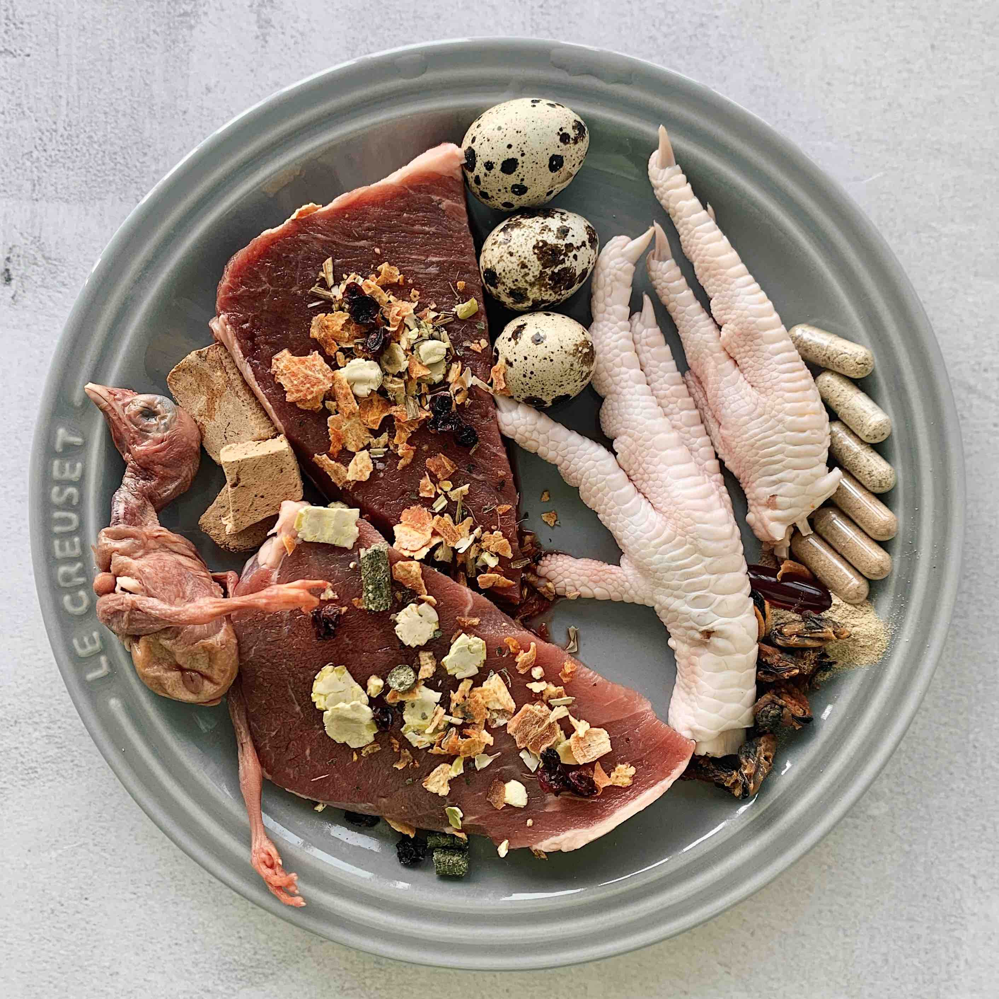
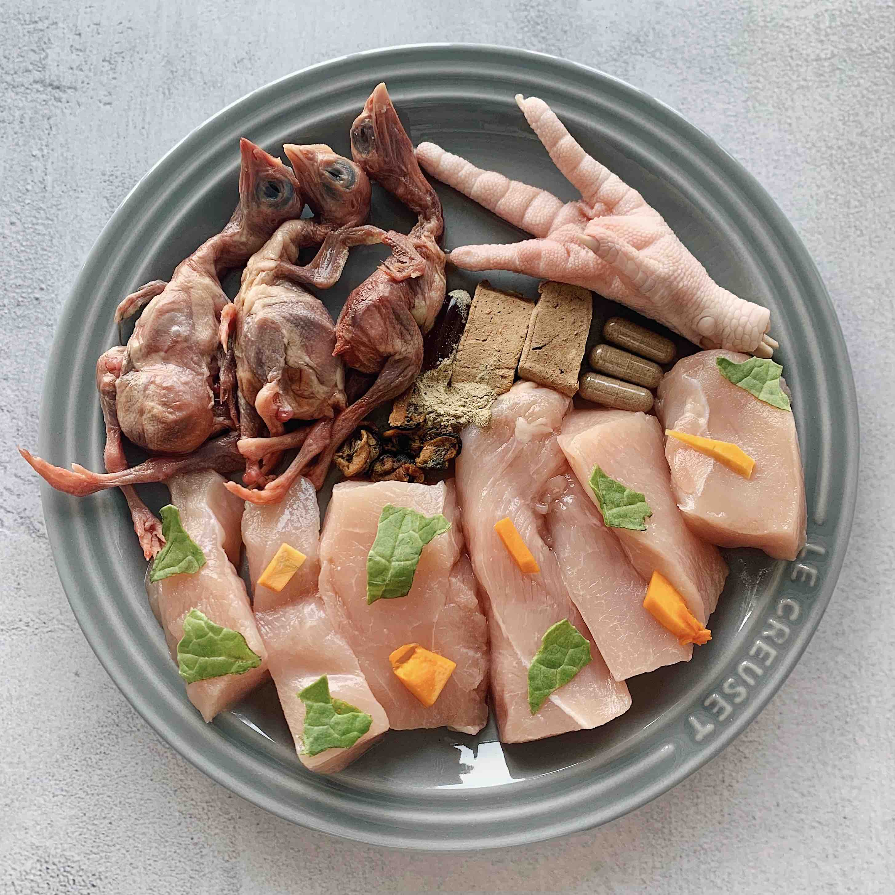

Recipe
Recipes below are formally calculated as complete and balanced dog food.
One single recipe can already provide all nutrients required,
without having to balance over time.
However, they do not guarantee 100% nutritional balance as they have not been tested.
If you do not want to build your own recipe,
you can use our existed recipes.
More recipes will be provided in the future.
*Images and texts are not related.

Beef Muscle Meat- 1815g
Recipe 1
Beef Based
Beef Muscle Meat- 1815g
Beef Heart - 340g
Beef Liver - 113g
Spinach - 455g
Broccoli Stem - 225g
Sardine - 105g
Bone Meal - 40g
Hempseed Oil - 4 tsp
Iodised Salt - 2 tsp

Chicken Neck, skinned - 1000g
Recipe 2
Chicken Based
Chicken Neck, skinned - 1000g
Chicken Thigh, skinned - 1000g
Chicken Heart - 225g
Chicken Liver - 225g
Yam - 225g
Broccoli Stem - 225g
Oyster - 115g
Kelp Powder - 1/4 tsp
Egg - 1 whole
Ground Flax Seeds - 60g
Vitamin E - 40 IU
Coconut Oil - 30g

Recipe 3
Beef Based